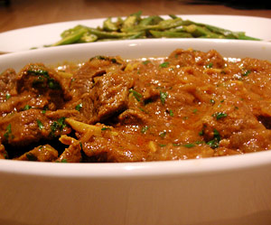

Rotes Lammcurry Kaschmir-Art
5,5 von 61 kg Lammragout mit 150 g Joghurt, einigen Safranfäden und 2 El Mandelsplitter mit einander vermengen und einige Stunden ruhen lassen. Reichlich Ingwer und Knoblauch mit einem EL Wasser mit dem Mixer pürieren und beiseite stellen. Oel in einem Topf erhizen und darin Garam Masala (beim Inder erhältlich) andämpfen. 350 g in Ringe geschnittene Zwiebeln beigeben und anschwitzen. Nun die Ingwer/Knoblauchpaste mitbraten. Das Fleisch samt Marinade beigeben, 30 Minuten garen. Die gemahlenen Gewürze (Chilipulver, Koriander, Kurkuma und Salz) und zwei EL Tomatenmark dazu geben und weitere 30 Min. weiter garen. Kurz vor dem servieren reichlich frischen Koriander darüber geben.
